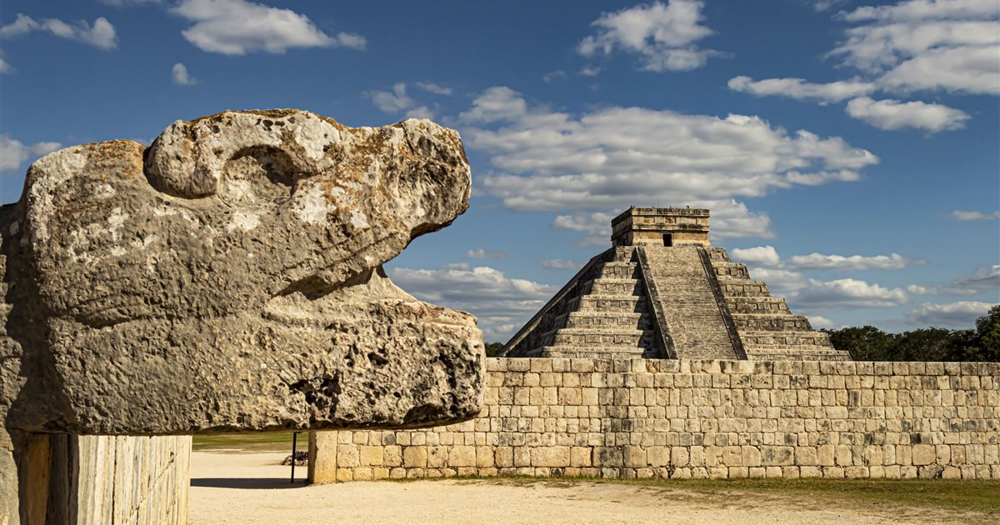
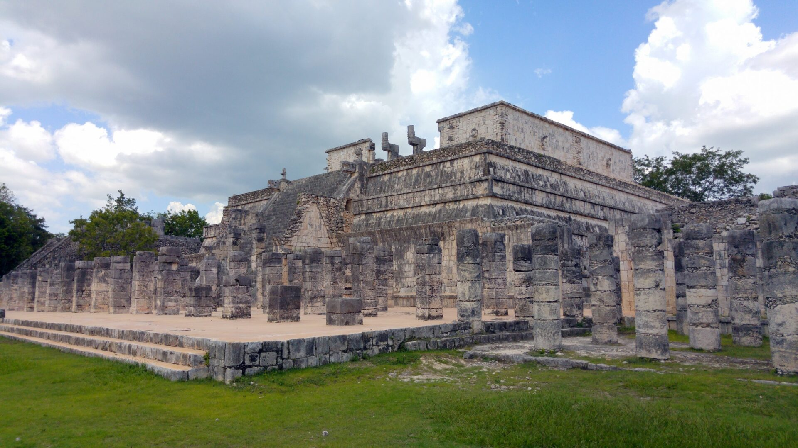

Chichén Itzá es una de las ciudades más impresionantes que dejó la civilización maya y representa uno de los mayor 
La ciudad destaca por su arquitectura monumental y por la combinación de estilos mayas y toltecas, lo que revela que hubo contacto e intercambio cultural con otros pueblos. Su construcción más famosa es la pirámide conocida como El Castillo, dedicada a Kukulkán, una de las principales deidades. Esta estructura no solo era un templo, sino también un calendario gigante, ya que sus 365 escalones representan los días del año. Durante los equinoccios, la luz del sol crea un efecto visual en el que parece que una serpiente desciende por la escalinata, lo que demuestra el avanzado conocimiento astronómico de los mayas.
Además de esta pirámide, Chich

én Itzá cuenta con otros edificios importantes como el Gran Juego de Pelota, el más grande de toda Mesoamérica, donde se realizaban juegos con un fuerte significado ritual. También se encuentra el Templo de los Guerreros, rodeado de columnas esculpidas, y el observatorio conocido como El Caracol, que evidencia la capacidad de los mayas para estudiar los movimientos de los astros. Otro lugar destacado es el Cenote Sagrado, que era utilizado para ceremonias religiosas, incluyendo ofrendas y sacrificios.